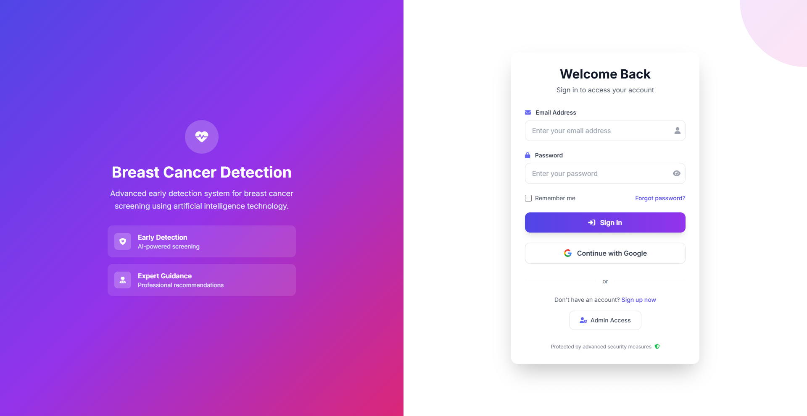
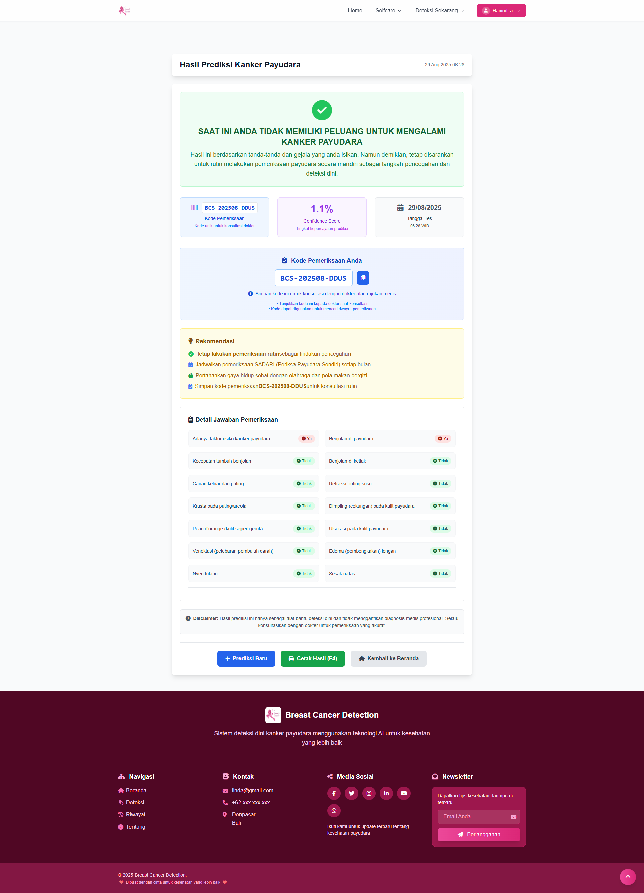
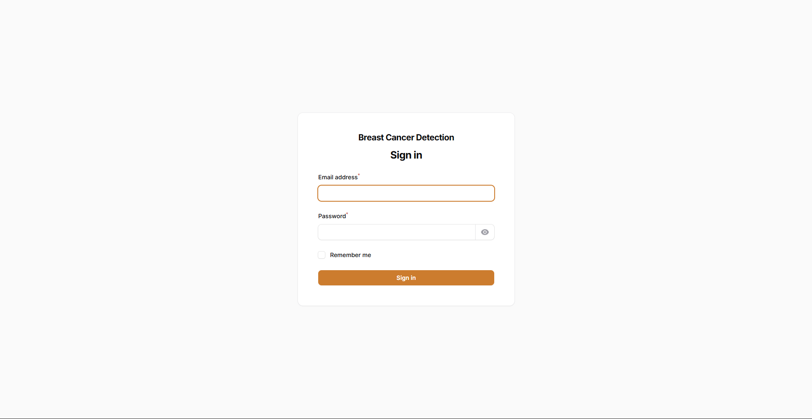
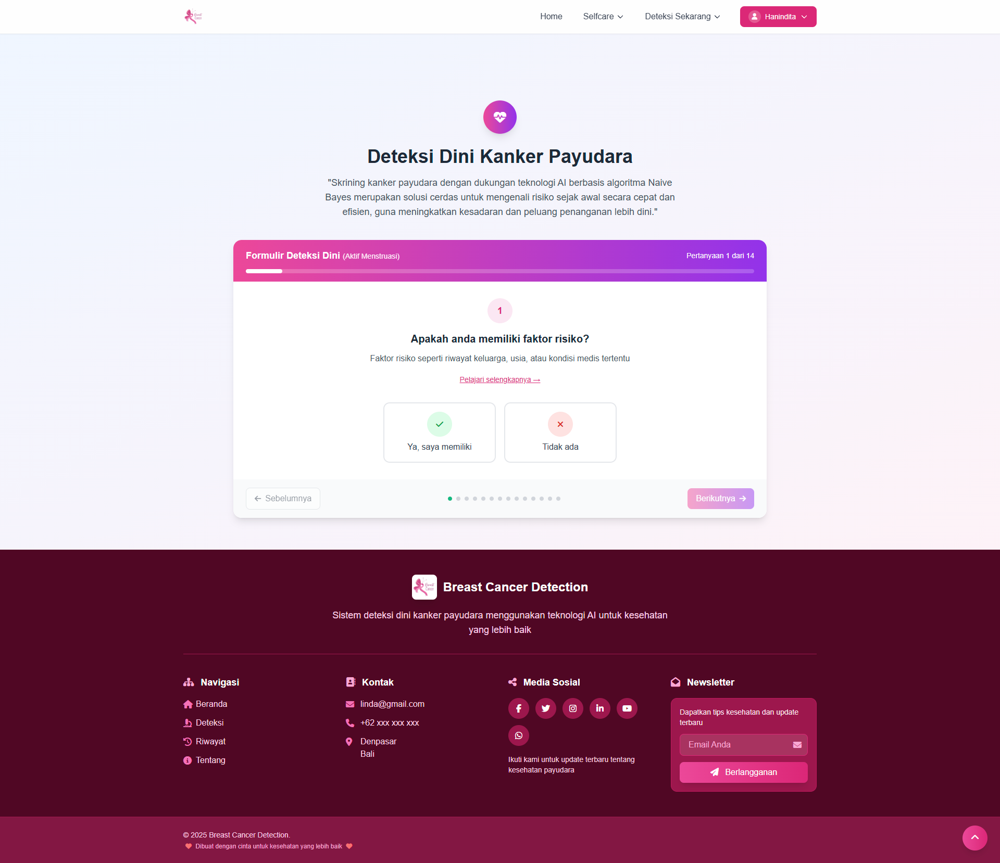

Breast Cancer : AI-Based Breast Cancer Screening
 Yoga Pratama
• July 2025
Yoga Pratama
• July 2025
Breast cancer screening supported by AI technology using the Naive Bayes algorithm is an intelligent solution for identifying risks early in a fast and efficient manner, aimed at increasing awareness and improving opportunities for early intervention.

Disclaimer:This project is a personal case study.
Overview
Early detection of breast cancer is developed to increase public awareness of preventive activities such as SADARI (Breast Self-Examination) every month. Breast cancer screening supported by Artificial Intelligence (AI) technology using the Naive Bayes algorithm provides an intelligent solution to identify potential risks at an early stage quickly and efficiently, thereby enhancing awareness and improving opportunities for timely treatment. This project integrates several technologies, including Laravel as the web framework for application development, Tailwind CSS for building a responsive and modern interface, and Spring Boot as the backend service connected with the Weka machine learning library to perform Naive Bayes classification for breast cancer risk prediction. Additionally, Postman is used for testing and validating RESTful APIs to ensure system reliability. Through the integration of these tools, the project offers a comprehensive platform that combines preventive healthcare awareness with AI-driven diagnostic support, empowering individuals to conduct regular self-examinations while leveraging intelligent screening to strengthen early intervention strategies.
Main Objectives
This project is expected to assist healthcare professionals in providing education on self-conducted early detection, enabling patients and the community to predict health risks more easily. In addition, the system provides appropriate first aid information and supports more effective care planning, thereby improving the quality of prevention, early treatment, and the overall success of healthcare strategies.
Methodology
The project employed Agile Software Development, which emphasizes flexibility, collaboration, and incremental delivery. The methodology involved several phases:

- Analysis: Examining user needs and correlating data for system design.
- Design: Creating system architecture, interfaces, and use case diagrams collaboratively with stakeholders.
- Development: Breaking down programming tasks into modules and ensuring integration of functions.
- Testing:Conducting unit testing, integration testing, and user acceptance tests to validate system reliability.
- Maintenance:Iteratively refining the system based on user feedback and identified bugs
Website Pages
- The landing page is developed as the initial page that serves as the main interaction point for users with the breast cancer early detection system. The design of this page is made to be informative and responsive, aiming to support preventive and promotive efforts regarding the importance of performing SADARI (Breast Self-Examination) through the breast cancer early detection system. This page also includes a navigation bar with the menus Selfcare,Start Early Detection, and Login.
- The login page serves as the main gateway into the system. On this page, users (both administrators and hikers) can enter their credentials to securely authenticate. Once successfully logged in, the system will automatically redirect users to the dashboard or profile page according to their respective access rights. 
- Profile, the profile management page is designed to allow each user type—public users and doctors to update their personal information in accordance with their respective roles.
- The breast cancer signs and symptoms input form page is designed to allow users to independently provide information regarding their current condition. On this page, users can select or enter details about relevant signs and symptoms as part of the early detection process. The submitted data will then be processed by the system to analyze and generate a breast cancer risk prediction based on the implemented algorithm.
- prediction result, on this page, the prediction results are presented as a classification derived from the probability calculation of each class using the Naïve Bayes method. The class with the highest probability value is selected as the final prediction. Each symptom entered by the user contributes to the likelihood of being classified as “at risk of breast cancer” or “non-breast cancer.” The classification process utilizes the inputted signs and symptoms, which are then compared with the training dataset previously analyzed using the Waikato Environment for Knowledge Analysis (WEKA). The trained model is saved in .model format and integrated into the system. This model is implemented on the backend, which is developed with Spring Boot and supported by Maven. 
- The prediction results search page, This page provides information guiding users to enter the examination code obtained from patients during consultations regarding their prediction results. The examination code is unique, distinguished by the variation in the last four digits for each prediction result generated by community users.

The public user login page allows community users to enter their username, which is their email address, along with a password. In addition to the standard registration process, users can also log in using their Google account to simplify access to the system. Public users are required to log in if they wish to perform early detection and view their previous prediction results. Once the login is successful, an alert will be displayed confirming that access to the system has been granted.
The admin login page allows administrators to enter their username, which is the registered email address, along with the assigned password. Both doctors and administrators log in using the credentials that have been created for them, with access managed through role-based access control (RBAC) defined in the system. This approach is intended to ensure security, regulate access rights, and establish functional boundaries between different user roles.

The public user login page allows community users to enter their username, which is their email address, along with a password. In addition to the standard registration process, users can also log in using their Google account to simplify access to the system. Public users are required to log in if they wish to perform early detection and view their previous prediction results. Once the login is successful, an alert will be displayed confirming that access to the system has been granted.

The doctor profile management page is designed to facilitate updates to both personal and professional information. Personal details that can be updated include full name, email address, phone number, date of birth, national identification number (NIN), gender, and residential address. Meanwhile, professional information covers specialization, STR number, practice location, and educational background. This page enables doctors to independently maintain accurate personal data while also showcasing their professional credentials.

Users who select either the condition “Still Menstruating” or “Post-Menopause” and then click the button to begin filling out the signs and symptoms form will go through a restriction mechanism as part of the prediction flow. This mechanism serves as an initial filter to guide the input process but does not affect the final prediction generated by the system. Therefore, the user’s selection of hormonal conditions, whether during the menstrual cycle or post-menopause, does not alter the accuracy of the prediction provided.
Users can begin filling out their condition during SADARI by answering 14 provided questions, each representing a specific condition that can be selected. Every question offers two answer options, and the next button becomes active only after the user selects one, ensuring that no question is left unanswered. In addition, a previous button is available, allowing users to go back and review the earlier questions.

This page displays the patient’s personal information, the prediction results, and provides an option to print the prediction outcome.